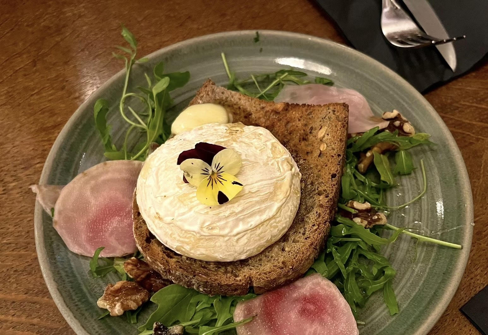
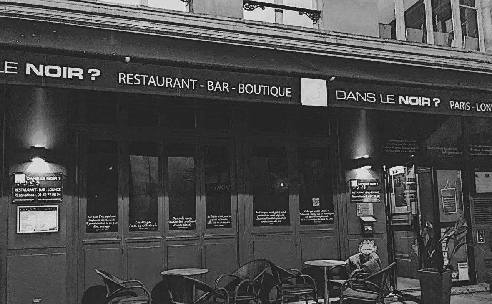
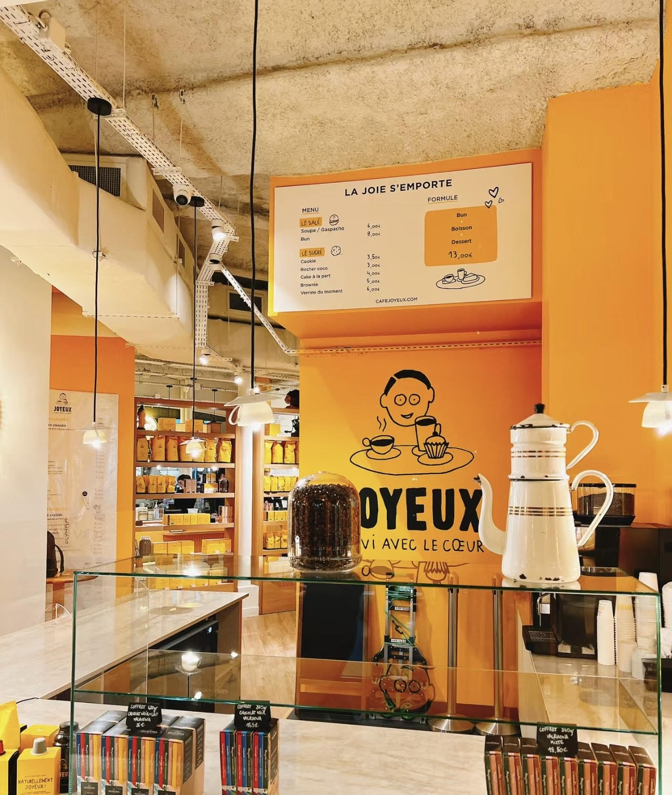

4 restaurants au top dont chaque correspond à un type d'accessibilité requis
Pour simplifier votre recherche, vous pouvez regarder ces 4 tops restaurants recommandés par nous; ou bien cliquer parmi ces 4 cases ci-dessous le type d'accessibilité requis correspond à votre situation.
Les Rupins - 10ème
Cuisine française et traditionnelle, ce restaurant parisien de qualité au service chaleureux et soignée a obtenu 9.3/10 sur le site TheFork.
Adresse : 35 Bd de Magenta
Tél: 01 53 19 97 04
Transport : Métro 4, 5, 8
Horaires : lundi-vendredi 12h00-15h00, 18h30-22h30; samedi 12h00-15h00, 18h00-23h30 ; dimanche 12h00-15h00, 18h00-22h30
Prix Moyen : 28 euros par personne
Site Officiel : https://www.lesrupins.fr/
Dans le noir ? - 4ème
Dans le Noir ? vous propose dans ses restaurants de dîner dans l’obscurité totale accompagnés et servis par des guides déficients visuels.
Adresse : 51 rue Quincampoix 75004 Paris
Tél : 01 42 77 98 04
Transport : Métro 1, 11; RER A, D
Horaires : mardi-vendredi 11h00-19h00 ; samedi 13h00-21h00
Prix Moyen : 35-70 euros par personnes, dépend l'activité que vous allez choisir
Site Officiel : https://www.danslenoir.com/
1000 & 1 Signes - 11ème
Un restaurant au décor pop art servant des plats marocains bio en langue des signes et café philosophique.
Adresse : 76 rue de Charonne
Tél: 06 83 99 73 11
Transport : Métro 8, 9
Horaires : mardi-samedi 12h00-14h00, 19h00-22h30
Prix Moyen : 20-30 euros par personne
Site Officiel : https://www.1000et1signes.com/
Café Joyeux -2ème et 8ème
Le Café Joyeux est une fafaçade café joyeuxmille de cafés-restaurants qui emploie et forme des personnes avec handicap mental ou cognitif.
Adresse : 23 rue Saint-Augustin; 87 passage de Choiseul, 75002 Paris; 144 avenue des Champs-Élysées
Tél: 01 87 53 64 80
Transport : Métro 1, 3, 8, 9
Horaires : lundi-vendredi 8h30-19h30; weekend 9h00-20h00
Prix Moyen : 10-20 euros par personne
Site Officiel : https://www.cafejoyeux.com/fr/
